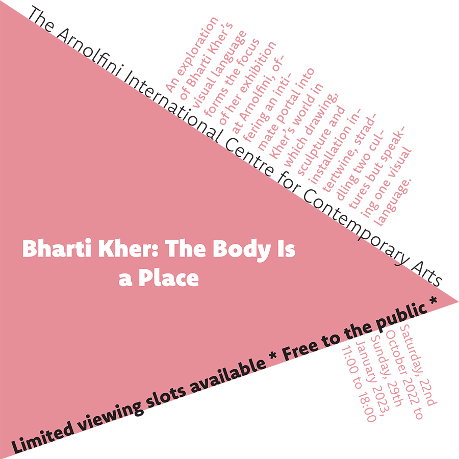
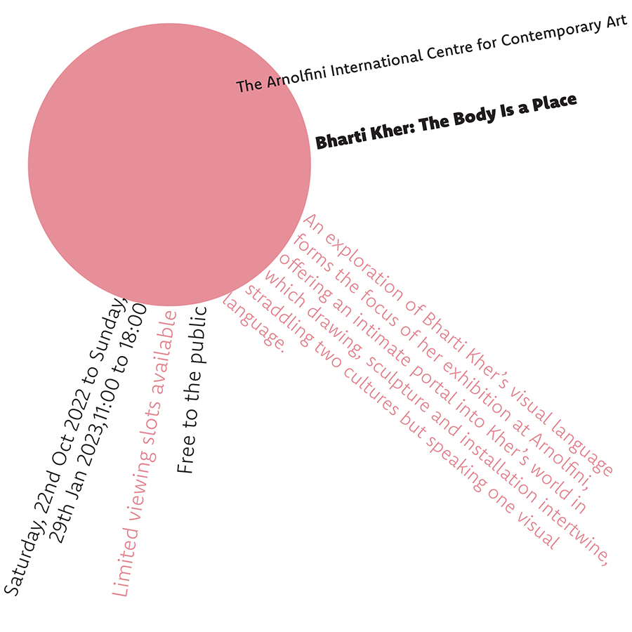
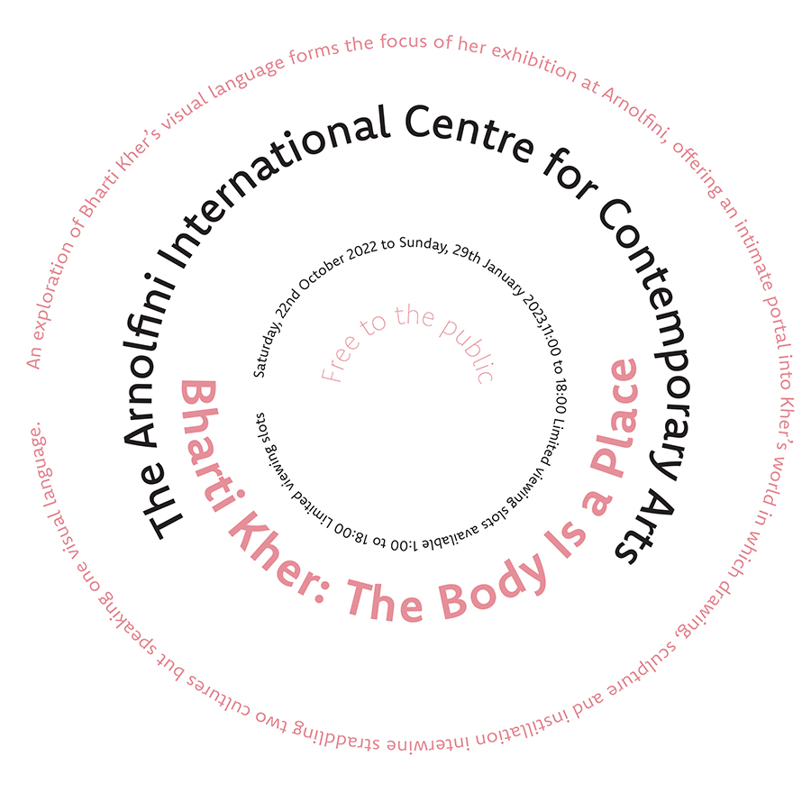
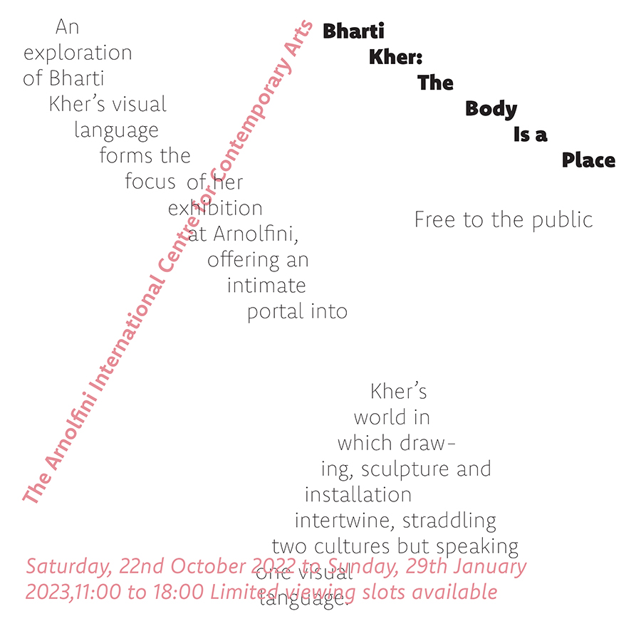
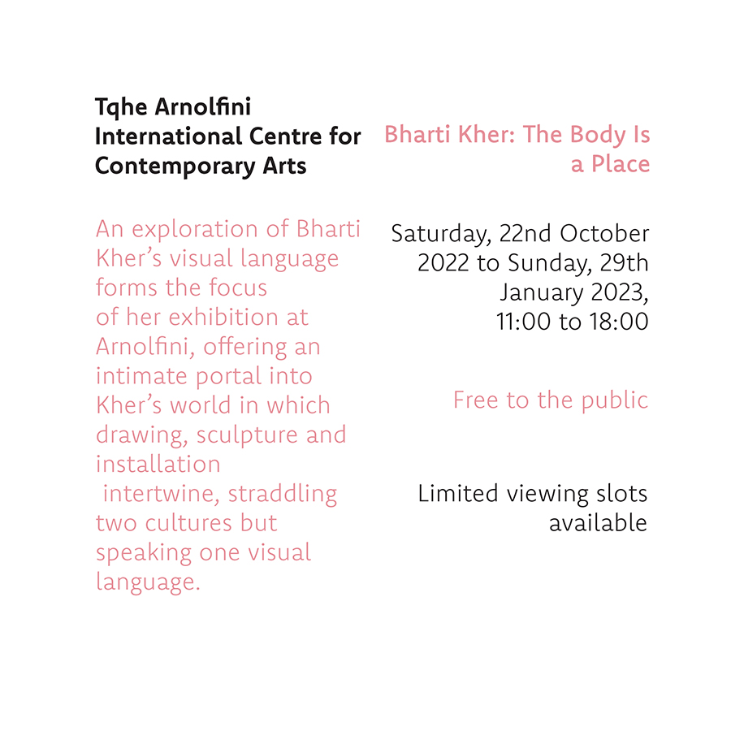
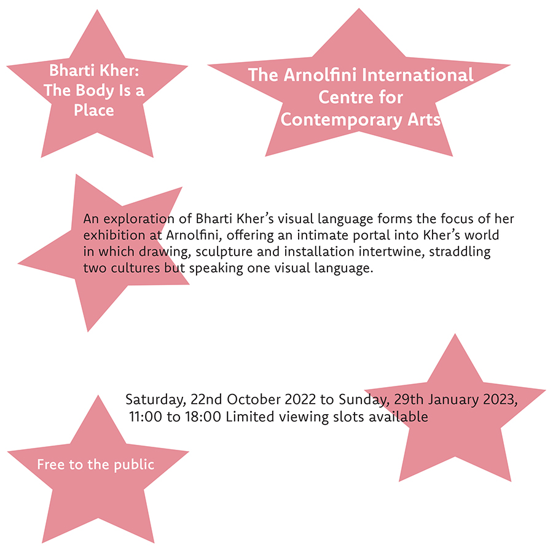
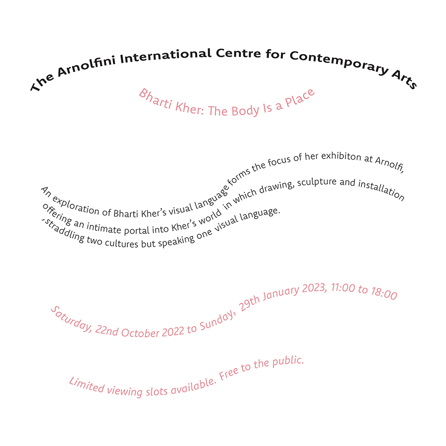
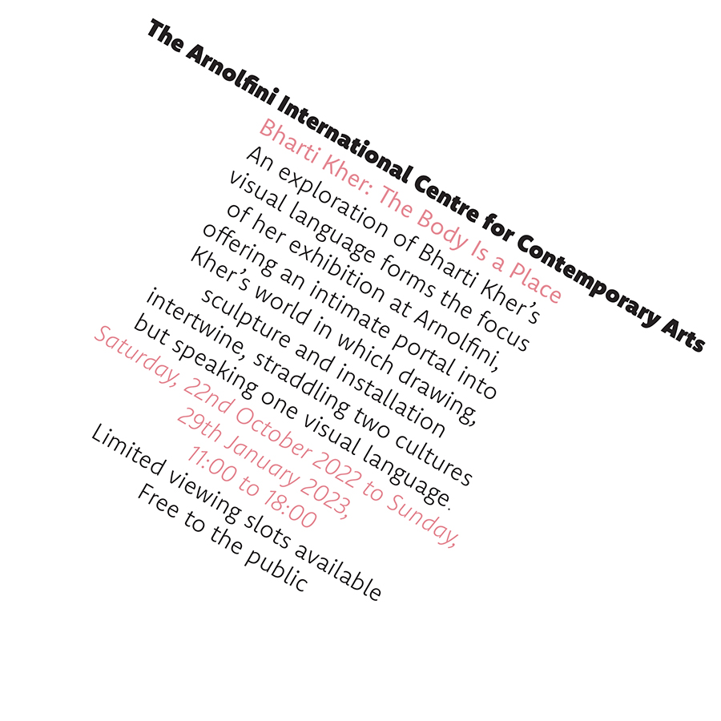

There are 8 different typographic systems that I have

Axial
Axial typography uses an imaginary line drawn from top to bottom of a glyph bisecting the upper and lower strokes.
To create an axial design, divide everything by an imaginary line (an axis). Axial designs arrange text in a way
which fits onto a certain axis and can be either symmetrical or asymmetrical around their axis.
Radial
Radial typographic systems are when text is placed radioactively around a centre. Radial system gives people the
feeling that all the words are either spread out from a centre or coming together into a point. All elements extend
from a point of focus.


Dilatational
Dilatational designs use type set along circular paths. the text forms curves around a point. The rings of a tree trunk
are a great example of dilatational design.
Random
There are no rules for this style of typography. There's no right or wrong with this system. The text is in no specific
layout it’s just everywhere.


Grid
A grid is a system of horizontal and vertical lines that can guide layout choices. Grids have been part of page layout
since the Gutenberg Bible.
Modular
Modular layouts use repeating structures to break up the content. It is a repeatable structure that fits your content.
For example, you could put everything into squares (which might end up looking like a grid) or circles (which could end
up looking like bubbles or clouds).


Transitional
Transitional is the idea that text will flow in a natural way, it usually looks unorganised and isn't used for a lot of
projects and is most often seen in books and movie posters.
Bilateral
The bilateral system is the most symmetrical of the visual organisation systems. It consists of a single axis. Placing
the axis off centre in the format can immediately make the composition more dynamic.
